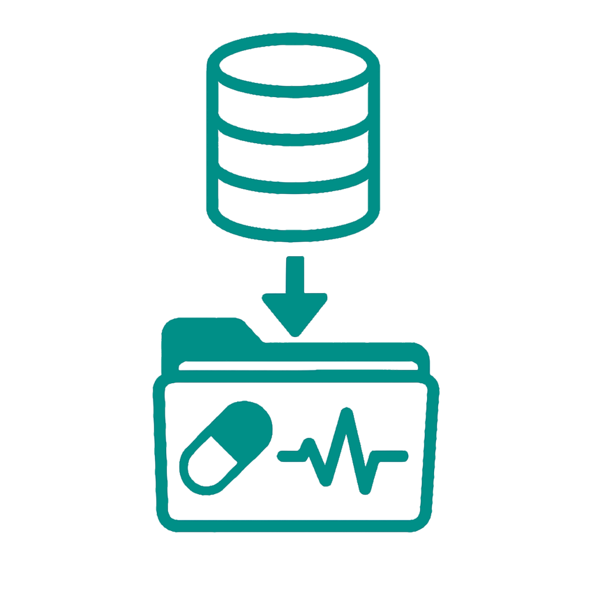

+23 min/pt
Clinical admin steals hours.
Doctors type 23 minutes of notes per patient, every day.
Record a short dictation
→
Local Whisper transcribes
→

Practice-specific LLM formats
→

Integrate patient data
→

Ready to use
Dictate → Letter in seconds